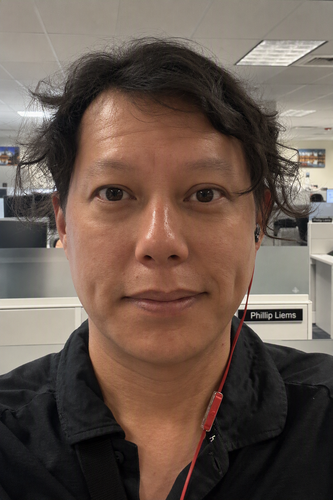

10+
Years Experience
Progressive career growth across industrial engineering, design, project controls, component engineering, and system architecture.
System Architect, Engineering Leader, and Technical Problem Solver specializing in rail vehicle systems, systems integration, and transportation innovation.

Career Highlights
A decade of transportation engineering experience spanning manufacturing, design, project controls, systems integration, production support, and system architecture leadership.
Progressive career growth across industrial engineering, design, project controls, component engineering, and system architecture.
Extensive CAD experience developing components, assemblies, installations, and manufacturing documentation.
Experience releasing parts, assemblies, weldments, and installation packages currently in revenue service.
Leading multidisciplinary engineering teams delivering integrated technical solutions across transportation programs.
About
Engineering leader and System Architect with experience spanning rail vehicle design, manufacturing engineering, project controls, systems integration, and technical leadership.
Over the past decade I have progressed through multiple engineering disciplines, building a unique understanding of how transportation products are designed, manufactured, integrated, and supported throughout their lifecycle. My career path has included industrial engineering, detailed design, project controls, component engineering, and system architecture leadership.
Today I lead the development and integration of rail vehicle interior and customer interface systems, coordinating multidisciplinary teams, aligning stakeholder requirements, and delivering technical solutions that balance customer expectations, manufacturability, operational performance, and long-term reliability.
My approach combines strong engineering fundamentals with a passion for continuous improvement, digital engineering, and AI-enabled productivity tools. I enjoy solving complex technical challenges, mentoring engineers, and helping organizations improve how engineering work is executed.
Experience trajectory
A career focus built around integrated engineering, disciplined execution, and better ways of working.
Started my rail transportation career supporting manufacturing operations, capacity planning, process improvement initiatives, fixture development, and production readiness activities using Lean and Six Sigma principles.
Designed rail vehicle structures, components, weldments, and assemblies while creating engineering drawings, bills of material, and customer review mockups supporting vehicle integration and accessibility requirements.
Managed schedules, forecasting, production planning, supplier risk analysis, and manufacturing execution support while aligning project requirements with operational capabilities.
Developed and released hundreds of rail vehicle components and installation packages across multiple programs while supporting suppliers, production teams, technical reviews, and root-cause investigations.
Lead engineering teams developing rail vehicle interior and customer interface systems. Responsible for system architecture, technical integration, stakeholder alignment, customer requirements, and technical leadership from concept through production support.
Professional experience
01 / Architecture
Lead development of rail vehicle interior and customer interface systems by aligning technical requirements, stakeholders, operational needs, manufacturability, and long-term system performance.
02 / Transportation Systems
Experience spanning component engineering, vehicle development, production support, accessibility compliance, and customer-facing transportation systems from concept through revenue service.
03 / Leadership
Lead multidisciplinary engineering teams, mentor engineers, coordinate stakeholders, and guide technical decisions that support successful project execution.
04 / Execution
Resolve complex engineering issues through investigation, root-cause analysis, supplier coordination, production support, process improvement, and practical implementation strategies.
Capabilities
Résumé
System Architect and engineering leader specializing in transportation systems, technical integration, and multidisciplinary engineering execution. With experience spanning industrial engineering, manufacturing, project controls, rail vehicle design, production support, supplier coordination, and system architecture, I bring a holistic understanding of the complete product lifecycle from concept through revenue service. My leadership approach combines systems thinking, technical rigor, stakeholder alignment, and continuous improvement to deliver practical engineering solutions for complex transportation programs. I am particularly interested in advancing digital engineering, engineering productivity, AI-enabled workflows, and developing the next generation of engineering talent while delivering reliable, customer-focused transportation solutions.